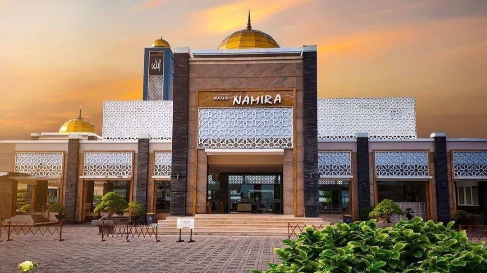

Masjid Namira Lamongan
Masjid Jami' Namira atau lebih dikenal dengan Masjid Namira adalah sebuah masjid yang terletak di Jotosanur, Kec. Tikung, Kabupaten Lamongan. Masjid ini mengusung gaya arsitektur yang mewah dari bangunan masjid di Timur Tengah.
Masjid KH.Ahmad Dahlan Gresik
Masjid K.H. Ahmad Dahlan (Gresik) adalah sebuah masjid yang terletak di desa Banjarsari, Cerme, Gresik, Jawa Timur. Masjid ini menyajikan gaya arsitektur yang menarik bagi beberapa orang karena mengambil konsep arsitektur dari Andalusia. Kawasan yang ditempati masjid ini sangat strategis karena terletak di perbatasan antara Kabupaten Gresik dengan Kabupaten Lamongan serta berada di dekat Terminal Bunder.
Masjid Moed'har Arifin Gresik
Berdiri di tanah seluas 5 hektare, saat ini Masjid Akbar Moedhar Arifin menjadi masjid paling megah di Kabupaten Gresik, Jawa Timur. Kemegahan masjid tidak hanya tampak dari bangunannya.
Dilansir dari akun facebook JJT (Jelajah Jawa Timur) pada Jumat (9/10),masjid Akbar Moedhar Arifin ini juga memiliki landasan helikopter.
Masjid Al-Akbar Surabaya
Masjid Nasional Al-Akbar Surabaya Ini adalah masjid terbesar kedua di Indonesia setelah Masjid Istiqlal di Jakarta dalam hal kapasitas maksimum. Lokasi masjid ini berada di samping Jalan Tol Surabaya–Gempol. Masjid ini memiliki ciri khas yaitu kubah vertikalnya yang besar, disertai dengan empat kubah kecil berwarna biru, dan memiliki Menara dengan ketinggian 99 meter.
Masjid Agung Sidoarjo
Masjid Agung Sidoarjo berada di sisi barat alun-alun Sidoarjo, diapit oleh Gedung DPRD Sidoarjo (utara) dan Lembaga Pemasyarakatan Sidoarjo (selatan). Berdiri di atas lahan seluas 2.115 meter persegi, masjid ini bisa menampung hingga 4.000 jamaah.